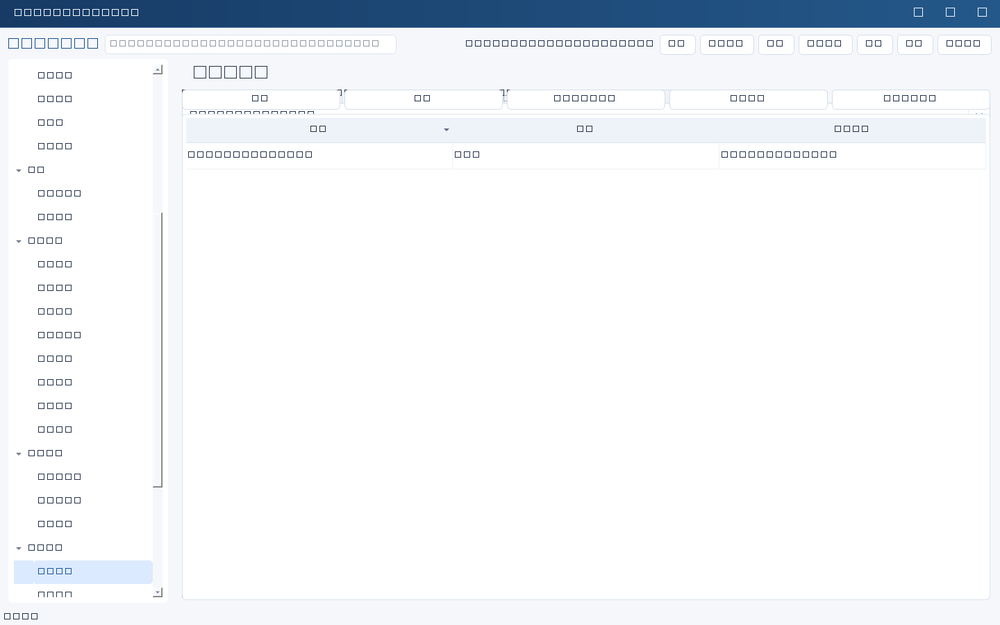
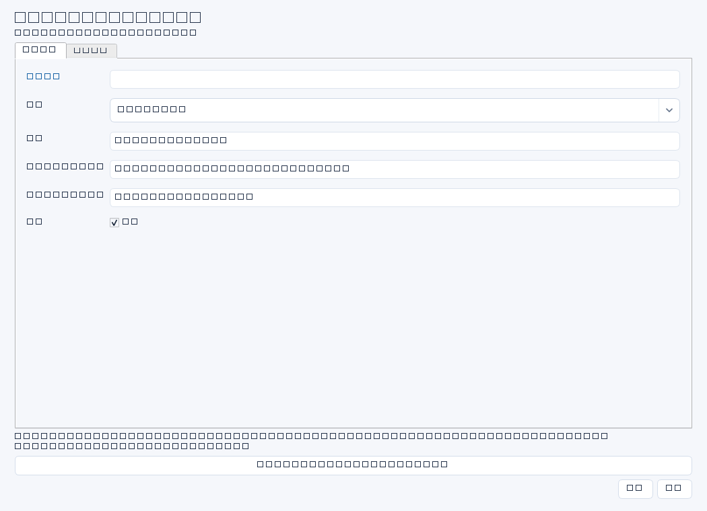
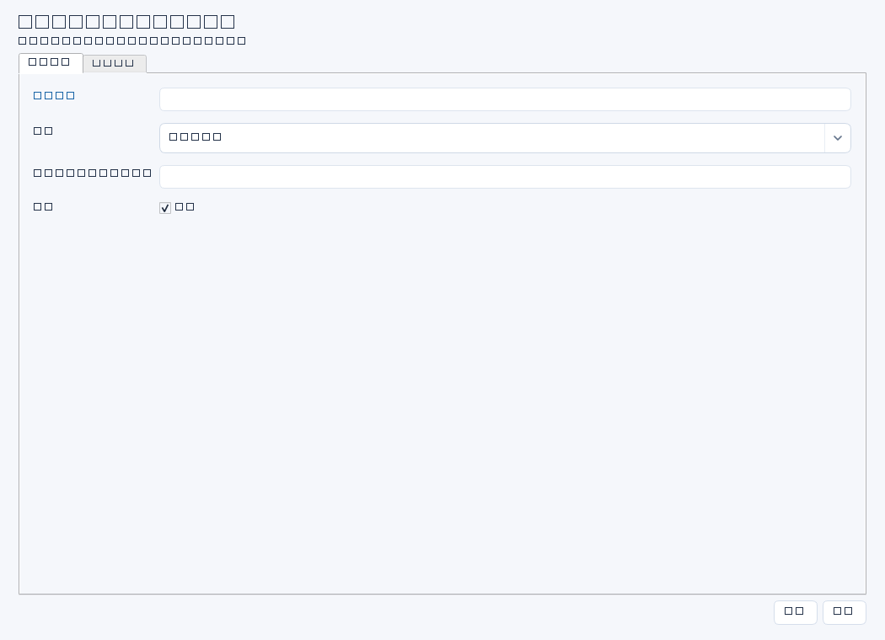
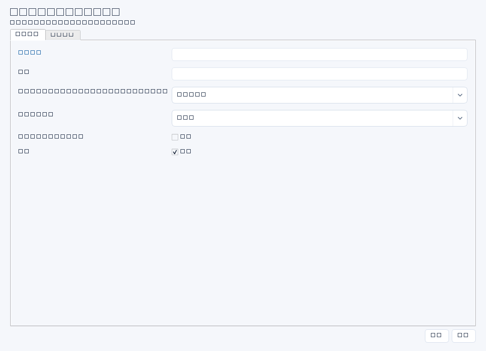
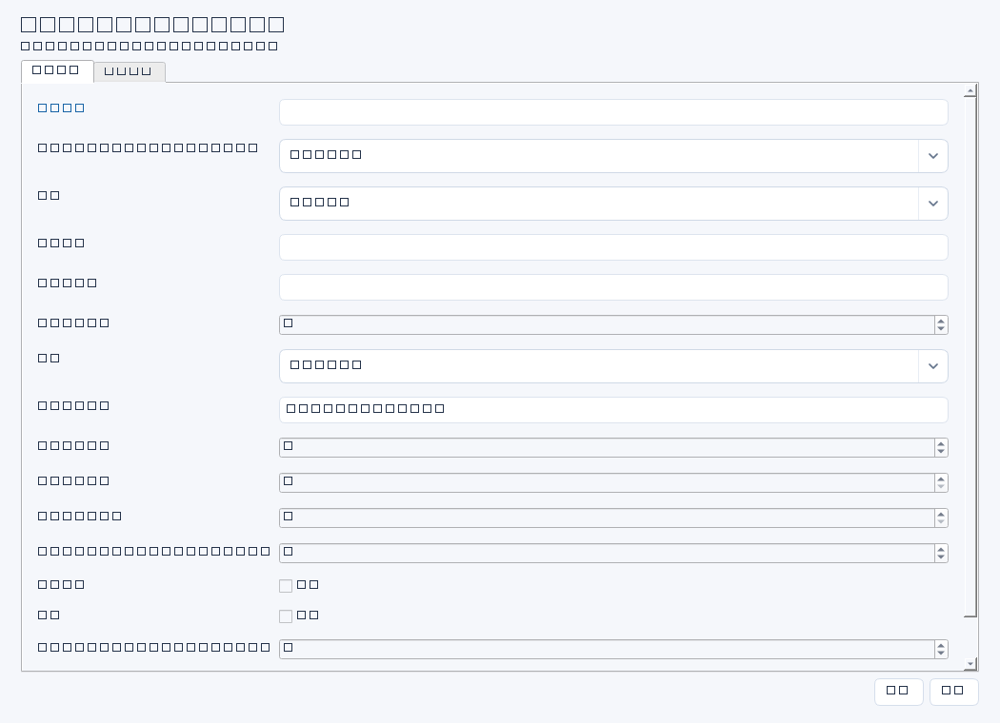

| 操作 / 字段 | 详细说明 |
|---|---|
| 模型：name / provider / model | 名称便于识别；平台限定deepseek/kimi/qwen；模型名称须对账号有效，默认示例不保证平台永久可用。 |
| base_url / api_key_env | 官方HTTPS兼容接口地址；API密钥填写服务端环境变量引用名，真实秘密通过凭据界面保存。不要将完整Key填进引用字段。 |
| temperature / max_tokens / timeout | 温度0—2；输出上限正整数；超时1—120秒。填表需完整JSON，输出截断会失败，不应盲目加大额度。 |
| 启用 / 测试连接 | 停用模型不会删除配置。测试会实际发起调用并可能收费，不是仅检查格式。 |
| 渠道：type | wecom/feishu/dingtalk/email。切换只显示当前类型相关字段，保存不提交无关设置。 |
| webhook_env / secret_env | Webhook完整地址按秘密保存；界面只引用名称。企微不填签名secret，飞书/钉钉按平台策略配置签名。 |
| SMTP host / port / security | 邮箱服务器、端口和ssl/starttls必须配套；不允许降级明文，证书需有效。 |
| username_env / password_env / from_addr / to_addrs | 账号及授权码引用成对；发件地址需有权限；收件邮箱用逗号分隔，每个为裸邮箱地址，不从人员台账自动群发。 |
| 提示词 purpose / module / is_default | draft用于通用草稿；form_fill用于结构化填表且必须选业务模块；同模块默认用于新打开的辅助窗口。复制不覆盖原模板。 |
| template / system | 模板变量有白名单语法{{identifier}}；系统约束不应包含密钥。填表内置安全约束不会因用户模板移除而失效。 |
| 周期 kind / mode | report或reminder；draft仅产草稿，auto_send需预授权，保存不代表已经执行。 |
| channel_id / owner / period_days | 明确目标渠道、负责人范围和周期天数；核对发送范围，防止敏感资料外发。 |
| frequency / timezone / hour / minute / weekday / day | daily/weekly/monthly；IANA时区例如Asia/Shanghai；周一=0，月日1—31，查看计算后的next_run。 |
| attachment / enabled | 附件用于邮件；启用前验证渠道与模板。备份恢复后计划会停用，需人工检查再恢复。 |







